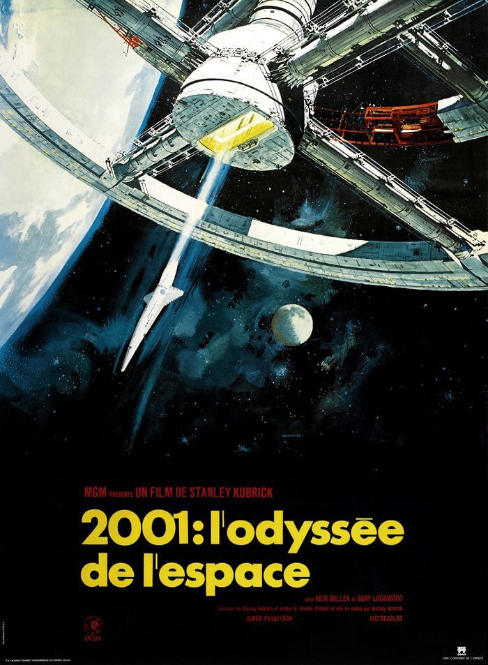
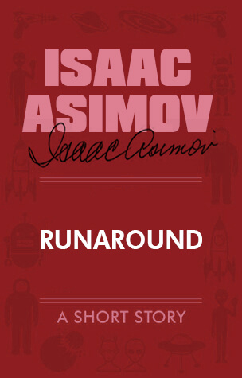
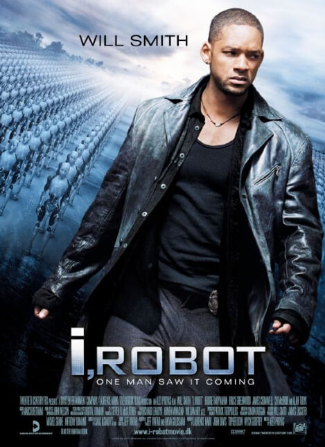
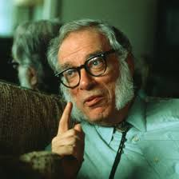
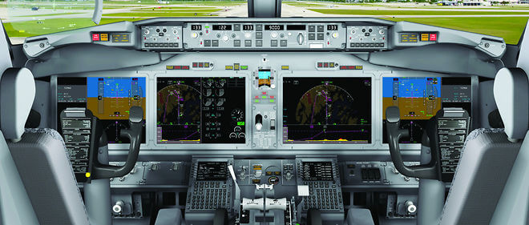

 Très rapidement, les robots ont été considérés par les humains comme un danger potentiel. L'hypothèse d'un robot se rebellant contre les humains a été soulevée par Stanley Kubrick dans son film 2001, l'Odyssée de l'Espace dès 1968, mais à l'époque ceci n'était que de la science fiction.
 Isaac Asimov avait édicté les trois lois de la robotique afin de calmer les craintes de l'Homme ordinaire envers la « machine ». Il les exposa pour la première fois dans sa nouvelle Cercle vicieux en 1942 :
| Première loi | Un robot ne peut porter atteinte à un être humain ni, restant passif, laisser cet être humain exposé au danger. |
| Deuxième loi | Un robot doit obéir aux ordres donnés par les êtres humains, sauf si de tels ordres sont en contradiction avec la première loi. |
| Troisième loi | Un robot doit protéger son existence dans la mesure ou cette protection n'est pas en contradiction avec la première ou la deuxième loi. |
 Ces 3 lois ont par la suite été reprises dans le film I,Robot de Alex Proyas en 2004.
Un autre exemple de robots devenant autonomes et se rebellant contre les humains apparaît également dans Real Humans, série télévisée de Lars Lundström en 2012.
Person of Interest, série télévisée, évoque également les dangers d'une machine qui deviendrait autonome.
Ainsi, bien qu'issues de la science fiction, ces trois lois sont toujours reconnues par la communauté scientifique.
 Asimov était parfaitement conscient des limites de ses trois lois, d'autant qu'il les avait conçues de manière à profiter de leurs faiblesses. Assez rapidement, dès 1950, il en pointa certaines limites, en particulier concernant la première loi qui protège l'humain en tant qu'individu et non en tant qu'espèce. En effet, il serait préférable en toute logique de sacrifier un individu si cela pouvait permettre de sauver un groupe plus important, sinon l'humanité tout entière. Malgré cette prise de conscience précoce, ce n'est qu'en 1985 qu'il intégra cette idée en modifiant les lois. Il ajouta aux trois lois une loi zéro qui plaçait l'intérêt de l'humanité au-dessus de celui d'un seul individu :
| Loi zéro | un robot ne peut nuire à l'humanité ni laisser sans assistance l'humanité en danger. |
Si Asimov était fier de ses lois de la robotique, c'est qu'elles représentaient pour lui un code moral et déontologique, établi non seulement pour les robots et leurs créateurs, mais aussi et surtout pour tous les scientifiques.
En raison des risques précédemment cités, il est important de légiférer en matière d'IA.
La robotique militaire est en plein essor, les drones armés se généralisent et deviennent de plus en plus autonomes. Les trois lois de la robotique sont là pour rappeler aux scientifiques leurs responsabilités. Les robots militaires tueurs ne peuvent pas, par définition, être conformes à la première loi. Dans ce contexte, une réflexion éthique est donc nécessaire pour éviter à la robotique un développement aveugle. En ce sens, les trois lois d'Asimov gardent toute leur pertinence.
Chaque jour de nouvelles innovations naissent, soulevant de nouvelles questions. C'est le cas pour les automatismes de plus en plus nombreux dans les cockpits d'avions.

« Transformer l'avion en drone et le ramener au sol en cas d'incapacité des deux pilotes (acte terroriste, par exemple) est techniquement imaginable, mais pose de nombreux problèmes. Sera-t-on sûr que c'est bien la compagnie aérienne qui en prend le contrôle depuis le sol ? Sur quel aéroport le faire atterrir ? Est-ce possible dans toutes les régions du monde ? »
Le Parlement européen a mis sur pied un rapport pour faire face au développement de l'IA.
Selon ce rapport, l'automatisation aura un impact largement positif sur la société mais cet impact doit être surveillé, notamment en ce qui concerne l'évolution du marché du travail et la répartition de la richesse. Il faut garder un œil sur les usages militaires, notamment ceux des nations extérieures à l'Union européenne. La nécessité de mettre en place un accord mondial dès que possible a été évoquée.
Il faut standardiser et réguler non seulement pour éviter d'éventuelles dérives et préparer le terrain pour le futur, mais aussi pour permettre un développement des technologies dès aujourd'hui. Le parfait exemple est le véhicule autonome. "On ne peut pas demander aux industriels d'avoir 28 procédures et 28 versions de leurs logiciels pour chaque pays de l'Union, avec la voiture qui redémarre à la frontière," a déclaré Roberto Viola, directeur général de DG Connect.
La question de la responsabilité civile et juridique en cas d'accident :
- L'idée d'un statut juridique de "personne électronique", est une piste pour d'éventuels futurs systèmes disposant d'une autonomie et d'une capacité d'apprentissage très développées.
-Un robot ou une IA reste un outil. La responsabilité est celle de son fabricant et de celui qui l'utilise.
A l'heure actuelle, entre 80 et 93% des accidents de la route sont dûs à des erreurs humaines. L'automatisation est donc fortement souhaitable, mais impliquera une responsabilité accrue des constructeurs, en particulier sur l'aspect logiciel.
L'impact sur l'emploi :
Des destructions d'emplois sont à prévoir mais elles seront compensées par d'autres emplois créés en retour. Il peut y avoir un déséquilibre entre les destructions et les créations d'emploi et une répartition très inégale de la richesse.
Une taxe sur les robots a été introduite pour compenser les pertes d'emplois.